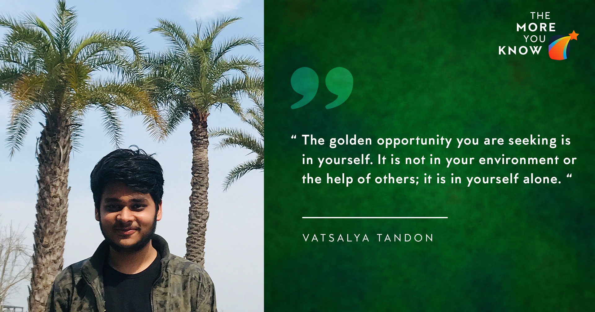

June 24, 2020
Hi there!
My name is Vatsalya and this is not a guide to the Internship season. At best, it’s just a collection of my thoughts and experiences, written, deleted and re-written again. The AnC guys convinced me that this may help people to prepare for internships and other stuff, nevertheless they have paid me well for this so why not?

Introduction
The process begins with asking seniors you know, or even if you don’t, about various sources of preparation and content. If you’re an introvert, don’t worry, you can skip this part and skim through the SPO website if it helps. There are a handful of folders pertaining to different types of internships. But before you engage yourself into that you need to decide what kind of an intern you would want to have. Research internships are an awesome option to discover for your summer vacations, because you can travel to some amazing destinations and at the same time advance in your own field of study. Unfortunately, I am a pretty inexperienced guy in this field, so I’ll cut short and move to the other half of internships.
Preparation
Coming to corporate internships, there are 4 kinds of opportunities that you would more or less encounter, of which you have been attending sessions by the AnC council since time immemorial. In my case, I aimed for both analyst and technomanegerial roles. For the latter we formed a GD group in the summers, for discussions on sample cases and questionnaires. We were blessed to have members from DebSoc to guide us on our vocal skills and thought process as well as abundant mosquitos to replicate the blood sucking corporate environment. Wait a sec, Harshit is telling me that Bhavjeet has already mentioned the existence of our prep group so I guess I’ll cut tha-
Anyway, for the software role, I started with InterviewBit prep modules as well as reading interesting questions and solutions on the GeeksForGeeks website. Now GfG is a pretty handy website and is always recommended for a quick solution on more or less any common existing problem in programming, but don’t replicate the solution, at least in courses that end in the number 7 with >100 students enrolled. As I wasn’t able to register for M/HSO201 on campus, I did an online course during summer 2019 on Udemy, which was surprisingly pretty relevant and focused on some key aspects of ProbStats that are usually asked in the interviews. I also started with the MIT OCW course on probability and statistics which was fun. Then I quickly learnt that some books might be of great help like “50 challenging problems” and so I waited for Parth and Ayush to come back to college, so that I could solve it with him. Prepping with friends is really helpful because there’s an added element of teaching someone and being taught by someone, which really sticks in your mind. Other than that, Brainstellar and Gurmeet’s blog are pretty good resources for puzzles and probability questions that are usually asked in most interviews.
D Day(s)
The week before the D Day was lined up with tests and exams of various day 1 or 2 companies. I would not dive into the tests of the said companies because it has already been covered in the articles before. What I can offer is my point of view of this process, and the things I particularly encountered. Most of the tests happen in evening/night so make sure you have a proper sleep schedule at hand and don’t waste your energy during the day. Don’t undertake any last minute prep, it’s always the case that if you know you know. And always try to aim for the best and prepare for the worst. I remember talking to people who undermined themselves saying that they don’t really have a chance even before any test/interview happened. Don’t let that feeling develop inside you.
Again, I will not choose to delve into the intricacies of my interview processes as that would take a lot of wordspace and at the same time not really provide any useful insights to the people this blog is aimed at. On Day 1 I had totally bombed the interviews of CapOne, Deutsche Bank and ITC and had done well in the interviews of Goldman and HUL. At the end of the day I had offers from both GS and HUL and I chose to go with HUL. Having said that, people I knew came to me afterwards and doubted my decision, but then I was fine with what I chose. Almost a year down the line, I am glad I took that decision because HUL not only just stood by their promise of providing an internship but also helped me make the best of the same, with me being able to interact and learn from people all across the globe.
Ending Remarks
I believe that with all the resources available at your hand in terms of blogs and articles, there would be a lot of advice in the form of tips and tricks that you would have seen quite a number of times. This involves suggestions of reading this book or going through this website or that course on coursera. So repeating that stuff here won’t be the most wise thing to do.
I would however like to point on a really overlooked factor which is luck. Luck can completely change the equation in more ways than one, and usually people don’t account for that factor while going into an interview. Your preparation can be tested via the shortlisting tests, but it might be a different ballgame inside the interview room. I have seen extremely capable people not getting through the interviews and vice versa too. If you’re lucky enough, enjoy and stay grounded, however if you’re unlucky, learn whatever you can from the experience and sit tight. The journey is long and there’s always something at the end if you try enough, and it does work out sooner or later.
Also many people tend to copy the people around them and never really look for what they want. This whole period at your disposal might be a really good time to introspect and find what you really want at the end of college. And if not a specific goal, then a step of ideas that you would definitely want to pursue. As someone rightly said -
“The golden opportunity you are seeking is in yourself. It is not in your environment or the help of others; it is in yourself alone.”
Thanks for bearing with me, it was a long one (TWSS)
If you have any queries/questions about anything you feel I might be of help, do ping me.
- Vatsalya Tandon